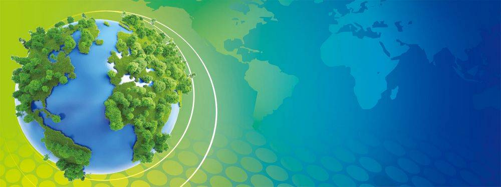
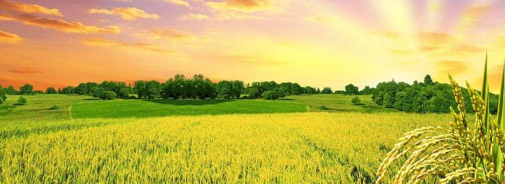
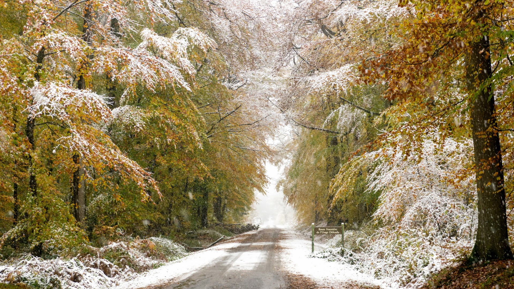

地球
地球就像我们的母亲一样养育着我们，滋润着我们

果实
金风送爽，天朗气清，正值丰收，宜硕果累累
Previous
Next
大自然的范畴
关于大自然--水、空气、山脉、河流、微生物、植物、动物、 地球、宇宙等等，都属于大自然的范畴;研究大自然的科学是自然科学， 包括数学、物理、化学、生物学、地理学等科学，而这些科学的分支学科 是非常多而繁杂的，如:生物科学又可分为微生物学、植物学、动物学三 大学科;再而又可以分出分子生物学、细胞学、遗传学、生理学等;各学 科交叉又会衍生出许多分支学科，如生物化学，生物物理学，分子结构生 物学等等

到处皆诗境，随时有物华
令人感到一种刚正不阿、力争上游的质朴美
似一幅凝重的画，如一首深邃的诗，若一个清新的故事
这陡峻的岩石耸立着，仿佛在无声地叙述着什么，又仿佛在期待着什么，沉思着什么
朦胧的远山，笼罩着一层轻纱，影影绰绰，在飘渺的云烟中忽远忽近，若即若离。就像是几笔淡墨，抹在蓝色的天边
Copyright © 2017.Company name All rights reserved.